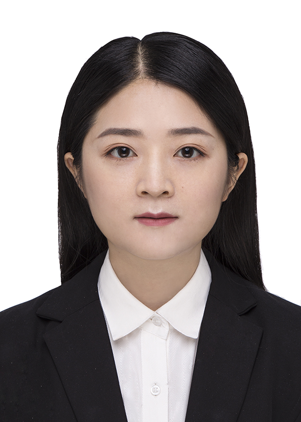
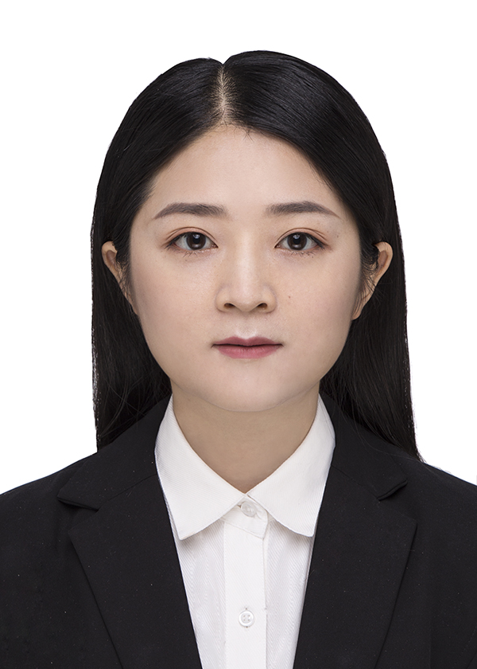

Meng QiPostgraduate
Heiniuchengdao Road 

|
 |
Education
Post-graduation
Meng QiPostgraduate
Heiniuchengdao Road
|
 |
Post-graduation
Tianjin Medical University
Master in Internal Medicine
Infectious disease(Institute of Infectious Disease & The Second Hospital of Tianjin Medical University)
Graduation
Professor Wei Qi' Group
Professor Lidong Wang' Group
| Teaching Assistant of Merit, 2018 |
| MedIA-MICCAI'17 Best Paper Award, 2017 |
| AAAI Scholarship, San Fransisco, USA, 2017 |
| Champion, Optic Disc&Cup Segmentation on Retinal Fundus Images (REFUGE 2018) |
| Champion, Whole-Heart and Great Vessel Segmentation (HVSMR 2016) |
| Champion, Skin Lesion Analysis Towards Melanoma Detection Challenge (ISIC 2016) |
| Champion, Prostate MR Image Segmentation 2012 (PROMISE12, until 2018 Jan.) |
| National Scholarship in China (1.8%), 2012-2014 |
| He Zhijun Scholarship (1/300+, Highest Honor in College of Computer Science, Zhejiang University), 2014 |
| Kwanjeong Educational Foundation Scholarship, 2012-2014 |
| Meritorious Winner, Interdisciplinary Contest in Modeling (ICM), Consortium for Mathematics and Its Application, 2014 |
| The Outstanding Undergraduate Award (Awarded by CCF, 100 undergraduates every year in China), 2014 |
| Outstanding Graduates of Zhejiang University, 2015 |
| 2015-2016 | Fall | CSCI1130 Introduction to Computing Using Java |
| 2015-2016 | Spring | CSCI3180 Principles of Programming Languages |
| 2016-2017 | Fall | ENGG5108 Big Data Analytics |
| 2016-2017 | Spring | CSCI3150 Introduction to Operating Systems |
| 2017-2018 | Fall | CSCI3150 Introduction to Operating Systems |
| 2017-2018 | Spring | CSCI3150 Introduction to Operating Systems |